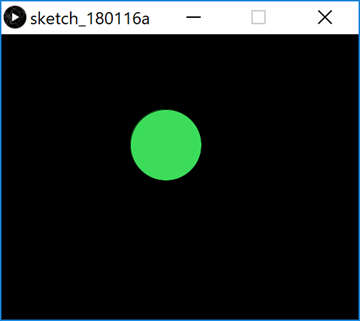

Objectives
animate simple drawings · variables · system variables · primitive data types · arithmetic operators
Opening the PDE (Processing Development Environment)
Go to the directory/folder where you installed your processing app.
You should see a list of files and folders similar to the image below:
Double click in the processing application (highlighted by the red rectangle).
The PDE (Processing Development Environment) should launch.

Basic Animation
- We will use the following built-in functions to animate our drawings:
- setup()
- draw()
A note on the setup() function
- setup() is called once when the program starts and should not be called again.
- setup() can set the screen size and background colour.
- There can only be one setup() function for each sketch.
A note on the draw() function
- You should never call the draw() function.
- Processing automatically calls the draw() function straight after the setup() call.
- draw() continuously executes the code contained inside it.
- There can only be one draw() function for each sketch.
Animating Ellipses
In your PDE, enter the following code:
Using the File, Save as... menu options, save this sketchbook as lab01b_step02.
Run the code. As you move your mouse around the canvas, you should have animation similar to the screen shot below.
Can you explain why there are multiple circles drawn? Why not just one circle?
Animating Ellipses (continued)
We are now going to change the code (from the previous step) so that only one circle is shown when you move the mouse.
Amend your code so that the background function is in the draw method instead of the setup method:
Run the code. As you move the mouse over the canvas, you should have animation similar to the screen shot below.

Can you explain why there is only one circle drawn as we move our mouse?
Playing with the System Variables
What would happen to our animation if we swapped the mouseX and mouseY system variables in the ellipse function with each other?
Make this change (the code change is below, if you need it) and see if you can figure out what is going on.
ellipse(mouseY, mouseX, 100, 100)Now, what would happen to our animation if we changed our ellipse function to be this:
ellipse(width, mouseY, 100, 100)Make this change and see if you can figure out what is going on.
Save your work (we will use a new sketch for step05).
Primitive Data Types
In Java, there are: - four whole number data types: byte, short, int, long. - two decimal number data types: float (default in Processing) and double (default in Java apps). - a single character data type: char. - a true/false data type: boolean.
Using the int data type
Create a new Sketchbook in your PDE and save it as lab01b_step05.
Enter the following code:
Run the code. Your window should now have three blue lines similar to the screen shot below:

Update the code using a,b,c and d variables to generate new lines:
Run the code. Your window should now have three new blue lines similar to the screen shot below:

A syntax error
Update the code by changing int to Int (uppercase I). Run your code again. What happened? Can you explain what happened? Ask your lecturer to explain it if you are not sure.
Change Int back to int.
Another syntax error
Update the code by changing the amount assigned to variable a from 70 to 70.56.
Run your code again. What happened? Can you explain what happened? Ask your lecturer to explain it if you are not sure.
Change 70.56 back to 70.
Save and close the sketchbook.
Primitive Data Types
Using the float data type
Create a new Sketchbook in your PDE and save it as lab01b_step06.
Enter the following code:
Run the code. You should see a grey window with a white square drawn in it.
Not a syntax error!
Update the code by changing the amount assigned to the xCoordinate variable from 50.67 to just 50.
Run the code. Why did it work? Can you explain what happened? Ask your lecturer to explain it if you are not sure.
Change the amount assigned to the xCoordinate variable back to 50.67.
A syntax error
Update the code by changing float to double.
You have a syntax erorr. Can you explain why? Ask your lecturer to explain it if you are not sure.
Change double back to float.
Another syntax error
Update the code by renaming the yCoordinate variable name to xCoordinate, as shown below:
float xCoordinate = 50.67;
float xCoordinate = 100.33;
rect(xCoordinate, yCoordinate, 80,80);You have a syntax error...can you explain why? Ask your lecturer to explain it if you are not sure.
Change the code back.
Save and close the sketchbook.
Exercises
The exercises are typically based on the material we covered in the previous steps in this lab and the associated lectures.
For each exercise listed below, open a new sketch.
Exercise 1 (static drawing)
In Step04 we entered this code:
Which produced this output:
Using this code as a starting point, make the following changes so that your output looks like this:

NOTE: the object of this exercise is to use the arithmetic operators on the variables (a,b,c).
Exercise 2 (static drawing)
The object of this exercise is to produce the same output as Exercise 1, but instead of using variables (a,b,c) use the width and height system variables and perform artihmetic calculations on them to produce the desired output.
Exercise 3 (animated drawing)
Produce the following animation:
a white circle is drawn when you move the mouse; only one circle is visible at one time (i.e. all previous ones are cleared).
the x and y coordinates for the circle are dependent on the mouse position (hint: use system variables mouseX and mouseY).
the size of the circle is determined by the y mouse coordinate.
When you run your code, your circle should grow in size as you move your mouse pointer down the window and reduce in size when you move your mouse up the window. When you move your mouse horizontally, the circle should stay the same size.
Exercise 4 (animated drawing)
Using exercise 3 as a starting point, add the following animation to it:
a black circle is drawn when you move the mouse (all previous black circles are cleared).
the x coordinate for the circle is the mouseY coordinate and the y coordinate for the circle is mouseX.
the size of the circle is determined by the x mouse coordinate.
When you run your code, the black circle should overlap the white circle when you drag your mouse from (0,0) diagnolally down to (100,100). When you move your mouse horizontally, the black circle show grow/shrink in size. It remains the same size when the mouse is dragged vertically. Note that the white circle's behaviour hasn't changed.
Challenges
For each exercise listed below, open a new sketchbook.
You may need to visit the Processing website for additional information.
Challenge 1 (animated drawing with no cursor)
Do some research to figure out how to turn the mouse pointer (cursor) off.
Implement this functionality in any one of the exercises from the previous step.
Challenge 2 (animated drawing with a different cursor)
Do some research to figure out how to turn the mouse pointer (cursor) into a hand.
Implement this functionality in any one of the exercises from the previous step.
Challenge 3 (animated drawing using a drag effect)
Do some research into the Processing variables: pmousex and pmousey.
Write a Processing sketch that uses these variables.
Solutions
The solutions for this lab can be found here.
If you require unzipping software, 7zip is a good choice: http://www.7-zip.org/ (or Keka for Mac http://www.kekaosx.com/en/)
After unzipping the solutions, it might be a good idea to copy the folders to your sketchbook folder. From Processing, you could then use File, followed by Sketchbook to easily open them.